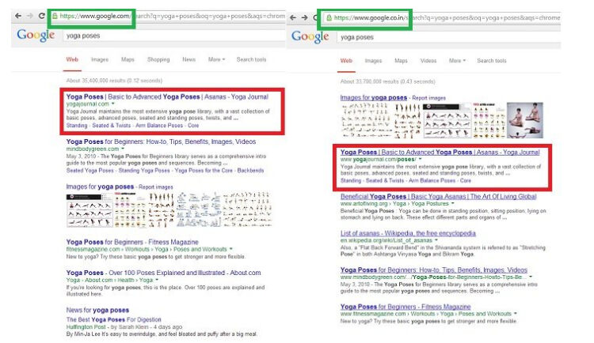
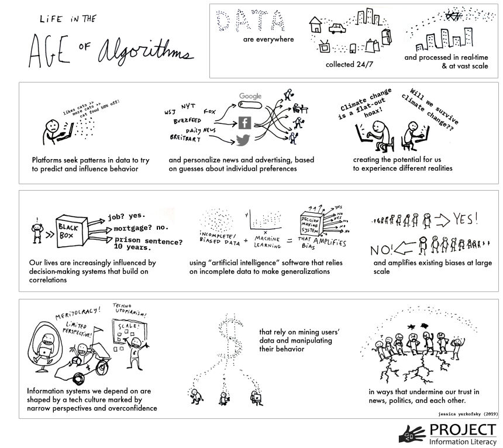
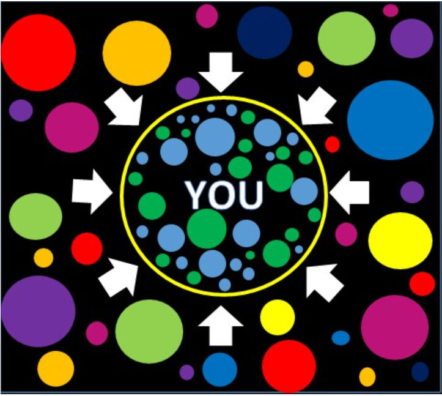
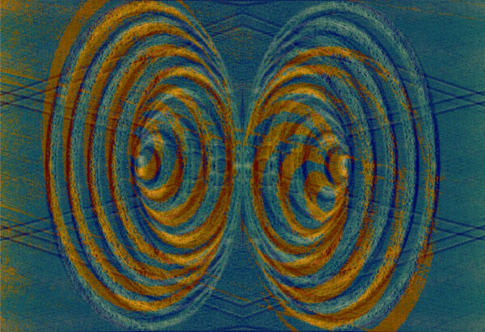

Öğrenen Sürümü
Eğitici Sürümü
Öğrenen Sürümü
Eğitici Sürümü
Modül 6: Algoritmalar Çağı
Modülün Tanımı
Bu Modülün temel amacı, algoritmalar, algoritmaların nasıl çalıştığı, insanları ve toplumları nasıl etkiledikleri ile otomatik karar vermenin faydaları ve sonuçları hakkında farkındalık yaratmaktır.
İkincil amaç, bu Modülün içeriğini başkalarını eğitmek için kullanmak isteyen eğitmenlere rehberlik etmektir.
Bu modülde bu amaçlarla algoritmaların nasıl çalıştığı, insanlar, toplumlar ve günlük yaşam üzerindeki olası etkileri, neden dikkatli bir şekilde ele alınmaları ve kullanılmaları gerektiği ve konunun nasıl öğretileceğine ilişkin yönergeler ele alınmaktadır.
Bu modülü başarıyla tamamlayanlar şunları yapabilirler:
- algoritmaların ne olduğunu ve nasıl çalıştıklarını anlar ve açıklayabilir
- algoritmaların insanları ve toplumları nasıl etkilediğini bilir
- algoritmaların artılarını ve eksilerini anlar ve açıklayabilir
- algoritmalar, haberler ve haber akışları arasındaki bağlantıyı anlar
- filtre balonları ve yankı odalarının nasıl oluştuğunu anlar
Ek olarak, bu modülü başarıyla tamamlayan eğitmenler, konuyla ilgili eğitim yönergelerini anlarlar.
Modülün Yapısı
Bu Modül aşağıdaki bölümlerden oluşur:
- Amaç, İçeriğin Tanımı ve Öğrenme Çıktıları
- Modülün Yapısı
- Öğrenenler için Yönerge
- Eğitmenler için Yönerge (hazırlık, kullanılacak yöntemler ve eğitmenler için ipuçları)
- İçerik (çalışma materyalleri ve alıştırmalar)
- Test
- Kaynakça (yararlanılan kaynaklar ve önerilen kaynaklar ile videolar)
Modülün ana hedefleri, içerik ve öğrenme çıktıları Modülün Tanımı bölümünde açıklanmıştır. Öğrenenler için Yönerge, öğrenenler için yönlendirme ve önerileri içerir. Eğitmenler için Yönerge, eğitimin farklı aşamalarında eğitmenlere rehberlik eder ve konuyu öğretirken faydalı olabilecek ipuçları sağlar. İçerik, tüm çalışma materyallerini ve ilgili alıştırmaları içerir. Test, katılımcıların kendilerini ve ilerlemelerini test edebilmeleri için hazırlanmıştır. Genellikle çoktan seçmeli veya doğru/yanlış sorularından oluşur. Kaynakça, yararlanılan kaynaklar ve önerilen kaynaklar şeklinde iki bileşenden oluşur. İçerik hazırlanırken yararlanılan ve atıf yapılan kaynaklar Kaynakça başlığı altında listelenmiştir. Ek Kaynakça, konuyla ilgili daha fazla bilgi edinmek isteyenler için okunması önerilen kaynakların ve izlenmesi önerilen videoların bir listesinden oluşur.
Öğrenenler için Yönerge
Öğrenenlerden içeriği dikkatle okumaları, önerilen videoları izlemeleri ve alıştırmaları yapmaları beklenmektedir. Daha fazla bilgi gereksinimi duydukları konularda kaynakçalarda listelenen kaynaklara başvurabilirler. İçerik üzerindeki çalışmalarını tamamladıktan sonra, ilerlemelerini değerlendirmek için modül sonundaki testi yapmaları önerilir. Test sonuçlarına göre gerekirse çalışma materyali yeniden gözden geçirilebilir.
Eğitmenler için Yönerge
Bu bölüm, ele alınan konunun nasıl öğretileceğine ve Modül içeriğinin bu amaçla nasıl kullanılabileceğine ilişkin eğiticilere yönelik öneriler ve ipuçları içerir.
Hazırlık
Eğitim başlamadan önce görsel materyallerle (resim ve video klipler) zenginleştirilmiş bir sunum (PowerPoint/Prezi/Canva) hazırlanması önerilir. Örneğin, farklı yerlerde bulunan bireylerin aynı arama motorunda aynı konuda yaptığı aramanın sonuçları gösterilebilir. Ayrıca gerçek zamanlı bir demonstrasyon da yapılabilir.
Başlarken
Konuya ısındırmak amacıyla başlangıçta Kahoot veya Mentimeter gibi araçlar kullanılarak katılımcılara konuyla ilgili genel ve kısa bazı sorular (3 ile 5 soru) yöneltilebilir. Böyle bir başlangıç katılımcıların konuyla ilgili mevcut bilgi düzeyleri hakkında bilgi de sağlayacaktır.
Kullanılacak Yöntemler
Eğitim sırasında çeşitli öğretim yöntemleri bir arada kullanılabilir:
- Ders anlatma
- Tartışma
- Grup çalışması
- Kendini yansıtma
Eğitmenler için İpuçları
Isınma
Katılımcıları sürece dahil etmenin ve öğrenecekleri şeyler hakkında ortak beklentiler oluşturmanın etkili bir yolu, konuyla ilgili birkaç ön soru sorarak düşünme ve tartışma olanağı yaratmaktır. Etkinlik şu şekilde gerçekleştirilebilir:
- Katılımcılara algoritmaların günlük yaşamlarındaki yeri hakkında ne düşündükleri sorulabilir
- Katılımcılardan, kendilerine verilen örnekleri sınıflandırmaları ve algoritma tarafından alınan kararların/durumların bir listesini yapmaları istenebilir
- Katılımcılara, maruz kaldıkları haberlerle algoritmaların bir ilgisi olup olmadığı sorulabilir
- Bu algoritmaları kimin yazdığı ve karar parametrelerini kimin belirlediği sorulabilir.
Tartışmalardan sonra, algoritmaların günlük hayatımızın her alanında yer aldıkları, başkaları tarafından yazıldıkları ve manipülasyon potansiyeline sahip olduklarının katılımcılar tarafından anlaşıldığından emin olunmalıdır.
Dersin Amacının Belirtilmesi
Amaç netleştirilmelidir. Bu dersin amacı, algoritmalar, günlük yaşamımızdaki yerleri ve manipülasyon potansiyelleri hakkında farkındalık geliştirmektir. Isınma sorularının ardından amaç ve hedefleri netleştirmek daha kolay olacaktır.
Ders İçeriğinin Sunulması
İçerik sunulurken katılımcılarla etkileşime girmek ve onları aktif katılıma teşvik etmek şunlar önerilebilir:
- Algoritmanın tanımı verilmeden önce, katılımcılardan algoritmaların işlevlerini ayrıntılı olarak tanımlamaları istenebilir
- Algoritmaların faydalarına ve potansiyel risklerine ilişkin bir genel bakış sunmadan önce, katılımcılardan bunun üzerinde tartışmaları istenebilir.
- Arama motorlarında farklı konumlar ve farklı kişiler tarafından aynı konuda yapılan aramalarda farklı sonuçlar elde edileceğinden söz ederken, bu söylem ekran görüntüleriyle veya gerçek zamanlı bir gösteri ile desteklenebilir.
- Zaman ve imkanlar izin veriyorsa, katılımcılardan aynı aramayı yapmaları ve sonuçları karşılaştırmaları istenebilir.
- Algoritmalar, haberler ve haber akışları arasındaki bağlantı netleştirilmelidir.
- Algoritmalara, filtre balonlarına ve yankı odalarına ilişkin kapsamlı bir genel bakış açısı sağlandıktan sonra, katılımcılardan yanlış bilgilerin yayılmasında algoritmaların oynadığı rol hakkında tartışmaları istenebilir.
Bitirirken
Dersin kısa bir özeti yapılırken verilmek istenilen en önemli mesajların tekrarlanmasını sağlayacak birkaç soru sorulabilir.
- Katılımcılara algoritmaların varlığını bilmenin kontrolü ele almaya faydası olup olmayacağı sorulabilir.
Tartışmalardan sonra, katılımcıların algoritmaların bazı durumlarda onların yerine karar verdiğini ve manipülasyon potansiyeli taşıdığını anladıklarından emin olunmalıdır.
İçerik: Algoritmalar Çağı
Giriş
Algoritma, bir sorunu çözmek veya bir görevi yürütmek için bilgisayarlar tarafından bir veri gövdesi üzerinde kullanılan talimatlar ve kurallar dizisidir (Head, Fister & MacMillan, 2020, p. 49). Algoritma, bilgisayarlara belirli bir görevi nasıl tamamlayacaklarını veya verilen verileri nasıl işleyeceklerini söyleyen mini bir kullanım kılavuzu olarak görülebilir (What is an algorithm?, n.d.).
Algoritmalar, bilgileri önceliklendirerek, sınıflandırarak, ilişkilendirerek ve filtreleyerek içeriği düzenler. Önceliklendirme, içeriği bir şeye dikkat çekmek için başka bir şey pahasına sıralar. Sınıflandırma, belirli bir varlığın herhangi bir sayıda özelliğine bakarak belirli bir sınıfın bir bileşeni olarak kategorize edilmesini ifade eder. İlişkilendirme, varlıklar arasındaki ilişkileri belirler. Ve filtreleme, bir dizi kritere dayalı olarak belirli bilgilerin dahil edilmesini veya hariç tutulmasını sağlar (Diakopoulos, 2013, p. 4-8).
Filtreleme algoritmaları genellikle önceliklendirme, sınıflandırma ve ilişkilendirme kararlarını hesaba katar. Örneğin haber kişiselleştirme uygulamalarında haberler o haberin nasıl kategorize edildiğine, kişinin ilgi alanları ile nasıl ilişkilendirildiğine ve o kişi için nasıl önceliklendirildiğine göre filtrelenir. Filtreleme kararlarına dayalı olarak bazı bilgiler aşırı vurgulanırken diğerleri sansürlenir (Diakopoulos, 2013, p. 4-8).
“Algoritma çağının” yükselişi toplum, siyaset ve haberler üzerinde derin bir etki yaratmıştır. Algoritmalar, inovasyon ve sosyal değişimin güçlü, verimli ve genellikle sorgulanabilir itici güçleridir (Head, Fister & MacMillan, 2020, p. 4). Günümüzde, karar verme görevlerinde insan müdahalesine yardımcı olmak ve bazen tamamen insanların yerini almak için giderek daha karmaşık algoritmalar tasarlanmaktadır. Çünkü algoritmalar çeşitli işlemleri insan çabasından daha düşük bir maliyetle ve daha yüksek verimlilikle yapabilmektedir (O’Neil, 2016). Otomatik karar vermenin potansiyel faydaları sayısız ve açıktır, ancak aynı zamanda endişeye yol açan bazı riskler de içerirler (Olhede & Wolfe, 2019, p. 2).
Algoritmalarla ilgili hızlı gelişmelerin yanı sıra verilerin büyük ölçekli elde edilebilirliği toplumu önemli ölçüde değiştirmiştir (Olhede & Wolfe, 2019, p. 2). Günlük hayatta, algoritmalar genellikle insanların ne izledikleri, ne satın aldıkları (Head, Fister & MacMillan, 2020, p. 5) ve hatta nasıl oy kullanacakları (Epstein & Robertson, 2015) hakkındaki kararları etkilemek için kullanılabilmektedir. Algoritmalar, arama motorlarından arama sonuçlarını filtreler. Kimin bir iş görüşmesine davet edileceğine ve nihayetinde kimin iş teklifi alacağına karar vermek üzere programlanmış olabilirler. Refah ve kamu güvenliği gibi sosyal hizmetleri yönetmek için kullanılabilirler. Hangi kredi başvuru sahiplerinin kredi riskinin daha düşük olduğu konusunda öneride bulunabilirler. Bu görünmez kod satırları tıbbi teşhisler koyabilir ve hatta bir cezanın süresini belirleyebilir (Head, Fister & MacMillan, 2020, p. 4-5).
Algoritmalar, işletmeleri ve hükümetleri güçlendirebilecek etkili kararlar verir (Diakopoulos, 2013, p. 29). Algoritmalar karar verirken, örneğin sağlık hizmetleri, kredi puanlama ve hisse senedi alım-satımında, politik, ekonomik, coğrafi, ırksal veya diğer ayrımcılığı teşvik edebilir (Pasquale, 2011). Algoritmalar, kullanıcıların deneyimlerini ve hatta dünya algılarını şekillendirebilirler (Diakopoulos, 2013, p. 3). Faaliyetleri bazen adaletsizliğe yol açabilmesine ve insanların algılarını şekillendirebilmesine ve seçimlerini etkileyebilmesine rağmen, insanlar görünmez olan algoritmaların varlığından genelde habersizdirler.
Bütün bunlar algoritmik gücün zararlı olduğu anlamına gelmez, aynı zamanda olumlu bir güç olarak da kullanılabilirler (Diakopoulos, 2013, p. 2). Algoritmalar, aslında, özünde iyi veya kötü değildir. Etkileri, ne yapmak üzere programlandıklarına, programlamayı kimin yaptığına, algoritmaların pratikte nasıl çalıştığına, kullanıcıların onlarla nasıl etkileşime girdiğine ve beslendikleri büyük miktarda kişisel veriyle ne yapıldığına bağlıdır (Head, Fister & MacMillan, 2020, p. 4). Ancak, önyargılarla çalıştırılabildiklerini ve hata yapabileceklerini bilmek önemlidir. Algoritmik kodlar opaktır (şeffaf değildir) ve karmaşık teknik katmanların arkasına gizlenmiştir (Diakopoulos, 2013, p. 2).
Algoritmaların etkileri önemlidir (Barocas, Hood & Ziewitz, 2013; Hamilton, Karahalios, Sandvig & Eslami, 2014; Sandvig, Hamilton, Karahalios & Langbort, 2014). Örneğin, arama algoritmaları bir toplum için mevcut olan çevrimiçi bilgiyi yapılandırır ve bir bekçi gibi işlev görebilir (Granka, 2010, p. 364-365; Introna & Nissenbaum, 2000). Bir Web arama motorunun kullanıcılarına sağladığı arama sonuçları, her kullanıcının Web'i görüntüleme biçimi üzerinde çok büyük bir etkiye sahiptir (Xing, Meng, Doozan, Feamster, Lee & Snoeren, 2014). Araştırmacılar, kişiselleştirilmiş arama sonuçlarının Google'daki etkisini test etmiş ve sonuçların herhangi bir zamandaki Web içeriği, aramanın yapıldığı bölge, yakın tarihli arama geçmişi ve ne kadar arama motoru manipülasyonu gerçekleştirildiğii gibi çeşitli faktörlere göre farklılık gösterdiğini saptamıştır (Xing , Meng, Doozan, Feamster, Lee & Snoeren, 2014).

Kaynak: Gohel, 2013
Araştırmalar, arama motoru şirketleri tarafından sağlanan arama sonuçlarının sıralamasının tüketici tutumları, tercihleri ve davranışları üzerinde çarpıcı bir etkisi olduğunu göstermektedir. İnternet arama sıralamalarının tüketici tercihleri üzerinde önemli bir etkisi vardır, çünkü kullanıcılar daha düşük sıradaki sonuçlara göre daha yüksek sıradaki sonuçlara güvenir ve onları seçerler. Arama sıralamalarının görünen gücü göz önüne alındığında, araştırmacılar, demokratik seçimlerde kararsız seçmenlerin tercihlerini değiştirmek yönünde manipüle edilip edilemeyeceğini araştırmıştır. Bulgular, taraflı arama sıralamalarının kararsız seçmenlerin oy tercihlerini %20 veya daha fazla değiştirebileceğini, kaymanın bazı demografik gruplarda çok daha yüksek olabileceğini ve insanların manipülasyonun farkında olmaması için bu tür sıralamaların maskelenebileceğini göstermiştir (Epstein & Robertson, 2015).
Matematiksel modeller olarak algoritmalar ve sonuçlarının adil, nesnel ve tarafsız olduğu konusunda yaygın olarak kabul edilen bir yanlış anlama vardır (O’Neil, 2016). Algoritmalar bilgisayarlar tarafından işlendiğinden ve mantıksal yönergeleri takip ettiğinden, insanlar genellikle onları tarafsız veya değerden bağımsız olarak düşünürler, ancak algoritmalar insanlar tarafından tasarlanmaktadır ve algoritmanın eğitildiği veriler insan önyargılarını taşıyabilmektedir (Head, Fister & MacMillan, 2020, p. 49). Algoritmalar soyut insan davranışlarını değerlendirmede yetersiz kaldıkları gibi gerçekliği ölçmek için kullandıkları veriler de zayıf olabilir. Algoritmalar, nasıl ulaştıklarını açıklamak zorunda kalmadan kararlar alırlar (O’Neil, 2016). Bunun aksine, insanlar tarafından karar verildiğinde, yargıdaki hataların düzeltilmesine izin veren bir geri bildirim döngüsü vardır (O’Neil, 2016). Ayrıca, sosyal sitelerin içeriğini tanıtmak için kullandığı algoritmalar, içeriğin geçerliliğini değerlendirmez, bu da yanlış bilgi yayılmasına neden olur (Jolly, 2014).
Sonuç olarak algoritmaların kalıcı olduğu ancak dikkatli kullanılması gerektiği söylenebilir (O’Neil, 2016).
Algoritmalar Çağında Yaşam: Büyük Resim
Bilgi dünyası son on yılda beklenmedik şekillerde değişmiştir. Bu değişiklikler kısmen algoritmaların etkisiyle açıklanabilir. Bu değişiklikleri yönlendiren faktörlerden bazıları Head, Fister ve MacMillan, (2020, p. 5-7) tarafından aşağıdaki şekilde özetlenen büyük resmi görmemize yardımcı olmaktadır:
- Günlük hayatımızla ilgili görünmez ve sürekli olarak veri toplanmaktadır.
- Veri bilimindeki gelişmeler, sistemlerin verileri gerçek zamanlı, hızlı ve geniş ölçekte (“büyük veri”) toplamasına ve işlemesine olanak tanımaktadır.
- Çok sayıda kaynaktan toplanan veriler hızlı bir şekilde ilişkilendirilebilmektedir.
- Kimin işe alınacağı, kimin kredi alacağı, sosyal hizmetlere erişim, okula veya eğitim hizmetlerine kabul gibi şeyleri belirleyen sosyal kurum ve süreçlerde artan şekilde otomatik karar verme sistemleri kullanılmaktadır.
- Çok önemli kararlar veren makine öğrenimi ve yapay zekaya dayalı sistemler genellikle yanlı veya eksik veri kümelerine dayanmaktadır.
- Yayınlanmış bilgilerin ayrıştırılması ve arama ve sosyal medya platformları aracılığıyla yeniden dağıtılması, eskiden farklı olan bu kaynakların (örneğin bilimsel makaleler, gazete hikayeleri) değerlendirilmesini daha zor hale getirmektedir.
- Kar amacı güden endüstriler, sonuçları kişiselleştirmek, davranışları tahmin etmek ve yönlendirmek, hedefe yönelik reklamcılık, politik ikna amacıyla insanların bilgisayarlarla etkileşiminden veri toplamaktadır.
- Ancak, söz konusu endüstriler, söz konusu veri toplamanın istenmeyen sonuçlarını öngörmekte ve bunlara yanıt vermekte güçlük çekiyor gibi görünmektedir.
- Etik kuralları olmayan sosyal medya platformlarının yükselişi, gazetecilik ve bilim gibi yerleşik bilgi geleneklerine güvensizliğin artmasına da sebep olmaktadır.
- İnsanların bilgi edinmesini etkileyen, bilgi ve inançlarını şekillendiren teknik altyapı, tasarım gereği büyük ölçüde görünmezdir.
- Bilgi sistemleri ve algoritmaların tasarımını kimin elinde tuttuğu ve bu gücün nasıl kullanıldığı konusunda kamuoyunda bilgi eksikliği vardır.
Sonuç olarak, algoritmalar çağında bilginin nasıl işlendiğini anlamak bireyler için büyük önem taşımaktadır (Head, Fister & MacMillan, 2020, p. 7-8).

Kaynak: Head, Fister & MacMillan, 2020, p. 6.
Haberler, Haber Akışı ve Algoritmalar
Diğer şeylerin yanı sıra, dünya ile ilgili gördüğümüz haberleri filtrelemek için de algoritmalar sıklıkla kullanılır. Bugün bireyler sosyal medya, e-posta ve okuma uygulamaları aracılığıyla giderek daha fazla haber keşfediyor, bu nedenle haber sitelerinin ana sayfa trafiği azalmaya devam ediyor. Bu durumun farkında olan ve altyapılarını buna göre ayarlayan yayıncılar ise kullanıcının nereden girdiğine bağlı olarak site deneyimini değiştiren algoritmalar oluşturuyorlar. Sonuç olarak, gazeteler bireyler için özelleştiriliyor ve büyük olasılıkla her birey çevrimiçi gazetelerin ön sayfalarını farklı görüyor. Kullanıcıları ilgilenecekleri içeriğe hızlı ve verimli bir şekilde ulaştırdığından, yayıncılar, çevrimiçi kitlelerin okuma ve paylaşım tercihlerine göre sitelerini optimize etmeyi iyi bir şey olarak görse de bu okuyucular için iyi olmayabilir (Jolly, 2014).
Kullanıcılara sık sık güncellenen haberler sunan haber akışları, algoritmaların etkin rol oynadığı bir diğer uygulamadır. Örneğin Facebook Haber Akışı (Facebook News Feed), bir kişinin arkadaş ağı tarafından oluşturulan tüm hikayelerden oluşan bir havuzdan seçilen algoritmik olarak düzenlenmiş veya filtrelenmiş bir hikaye listesi görüntülemektedir (Eslami, Rickman, Vaccaro, Aleyasen, Vuong, Karahalios, Hamilton & Sandvig, 2015, p. 153). Facebook Haber Akışı kürasyon algoritması algılarını incelemek için Facebook kullanıcıları üzerinde yapılan bir araştırma, katılımcıların yarısından fazlasının (%62,5) Haber Akışı kürasyon algoritmasının varlığından hiç haberdar olmadığını ve arkadaşlarından ve takip ettikleri sayfalardan gelen her hikayenin Haber Akışlarında yer aldığını düşündüklerini saptamıştır (Eslami, Rickman, Vaccaro, Aleyasen, Vuong, Karahalios, Hamilton & Sandvig, 2015, p. 153).
Algoritmalar, yalnızca insanların ilgilendikleri içeriği bulmasını değil, aynı zamanda algoritmanın onların ilgilendiklerini düşündüğü içeriğin de insanları bulmasını kolaylaştırır. Diakopoulos’a (2013, p. 2) göre bugün algoritmalar, toplumdaki yeni güç simsarlarıdır.
Filitre Balonları
Filtre Balonu, mevcut bilgi ve görüşlerle çelişen bilgilere maruz kalmaktan kaçınmayı kolaylaştıran kişiselleştirmenin bir sonucu olarak ortaya çıkan entelektüel izolasyondur. Kullanıcıyla ilgili bilgilerin (arama geçmişi, konum ve sosyal medya beslemeleri gibi) küratörlüğünün sonucudur. Sosyal medya platformları, kullandıkları algoritmalar ile kullanıcıları kolaylıkla filtre balonlarına hapsedebilir. Filtre balonları, kullanıcıları, mevcut inanç ve görüşleriyle uyumlu bilgileri yayan, benzer düşünen insanlarla çevrelerken, çelişkili bakış açılarına sahip insanlarla daha az temasa neden olabilir. Google'dan kişiselleştirilmiş arama sonuçları ve Facebook'tan kişiselleştirilmiş haber akışları bu fenomene verilebilecek iki örnektir (Filter bubble, 2018; Cooke, 2018).
Terimi ortaya atan Pariser'e göre, filtre balonu, ön sayfayı oluşturan şeyin önemini belirleyen gazete editörleri gibi "insan bekçilerden", Facebook ve Google tarafından kullanılan ve kullanıcının tıklama olasılığının en yüksek olduğuna inandıkları içeriği getiren algoritmik bekçilere geçişin yarattığı dünyadır (Fitts, n.d.). Teknoloji şirketleri ticari kuruluşlardır ve bu nedenle hissedarlarını mutlu etmek için kullanıcıların reklamlara maruz kalma süresini uzatmak amacıyla sitelerinde mümkün olduğunca uzun süre kalmaya teşvik etmeye çalışırlar. Bunu da kullanıcıların geçmişte beğendiği, paylaştığı veya yorumladığı şeylerden yola çıkarak algoritmaları değiştirerek yaparlar (Wardle & Derakhshan, 2017, p.52). Bu yeni dijital evren, "kullanıcının en sevdiği kişiler, nesneler ve fikirlerle dolu rahat bir yer" olarak da tanımlanabilir (Fitts, n.d.). Bununla birlikte, bilginin bu seçici teşhiri, yalnızca bilişsel yönleri nedeniyle değil, aynı zamanda ahlaki, politik ve sosyal yönleri nedeniyle de endişeye neden olmaktadır (Cisek & Krakowska, 2018).

Kişiselleştirmenin, ilgili ve faydalı bilgiye erişimi kolaylaştırarak ve geri kalanlardan (alakasız, yararlı olmayan, rahatsız edici vb.) kaçınarak bilgi karmaşası ve aşırı bilgi yüklemesiyle mücadeleye yardımcı olduğu şüphesizdir. Ancak, kendi kendine seçilen kişiselleştirme ile önceden seçilmiş kişiselleştirme arasında önemli bir fark vardır. Önceden seçilmiş kişiselleştirme algoritmalarında kullanıcılar için içerik seçilirken, kendi kendine seçilen kişiselleştirmede insanlar hangi içeriği görmek istediklerine kendileri karar verirler. Açıkçası bu yeni bir şey değildir. İnsanlar her zaman (ve hala) filtre balonlarında yaşadılar çünkü her zaman bilgi bekçileri (ebeveynler, hükümetler, dinler, sosyal gruplar gibi) vardı. Ancak bu balonların görünmez ve istemsiz olduğu durumlarda ciddi endişeler oluşmaktadır. İnsanlar eriştikleri bilgilerin kişiselleştirilmiş olduğunu bilmediklerinde, bunun eksiksiz ve nesnel olduğunu varsayabilirler. Geçit bekçileri olarak algoritmalar (diğer bir deyişle sansür mekanizmaları), içeriğe erişimin yanı sıra başka bakış açıları olduğu konusunda farkındalığını da engelleyebilir. Hepsinden kötüsü, etik ilkelere dayanmıyor olmalarıdır (Cisek & Krakowska, 2018). Filtrelerin değeri inkar edilemez, ancak insanları fikirlere veya olaylara karşı kör bırakma potansiyeli oldukça endişe vericidir (Anderson, 2016).
Filtre balonlarının olumsuz yönleri Cisek ve Krakowska (2018) tarafından şu şekilde özetlenmektedir: Yanıltıcı ve hatalı bir gerçeklik imajı ve bireysel bir zihinsel model yaratma; sınırlı bir bilgi, fikir, dünya görüşü çemberinde kapalı kalma; bilgi edinimini sınırlandırma; doğrulama yanlılığı ve bilişsel önyargı oluşumu; entelektüel ve duygusal tembelliği teşvik etme”.
Filtre balonlarını patlatmak, öncelikle filtre balonlarının var olduğunun farkına varılması ve ardından eleştirel düşünme ve haber okuryazarlığı becerilerinin geliştirilmesi ile mümkündür. Cisek ve Krakowska (2018) filtre balonlarını patlatmak için şu önerilerde bulunmaktadırlar: Algoritmaların seçtikleri şeyleri pasif olarak tüketmek yerine aktif olarak bilgi arama; arama motorları tarafından sunulan gelişmiş arama araçlarını (Boole operatörleri, gelişmiş arama vb.) kullanma; çeşitli arama motorlarını kullanma ve sonuçları karşılaştırma; kullanıcıları takip etmeyen ve kişiselleştirmeyen arama motorlarını kullanmak (DuckDuckGo, Qwant, StartPage gibi); Escape Your Bubble, FleepFeed, Pop Your Bubble gibi filtre balonlarından kurtulmaya yardımcı olan yazılımları kullanma ve ayrıca Deep Web'in varlığını unutmama.
Wardle ve Derakhshan’a (2017) göre filtre baloncuklarının insanları karşı karşıya bıraktığı en büyük zorluk beyinlerini yeniden alternatif bakış açıları aramak için eğitmektir. Eğer, insanların benzer insanlara bağlı hissetmek veya belirli bir kimliğe bağlı olmak gibi basitçe bilgi sahibi olmanın ötesinde bazı nedenlerden dolayı içerik aradıklarını ve tükettiklerini bilirsek, bu, filtre balonlarını delmenin sadece çeşitli bilgiler sağlamaktan fazlasını gerektirdiği anlamına gelir.
Yankı Odaları
Yankı odası, haber medyasında, inançların kapalı bir sistem içinde tekrarlayan iletişimle güçlendirildiği bir durumun metaforik açıklamasıdır. Bir yankı odasında, insanlar mevcut inançlarını ve görüşlerini güçlendiren bilgilerle karşılaşırlar. Bu, politik ve sosyal kutuplaşmayı ve aşırılığı artırabilecek bilinçsiz bir onaylama yanlılığı uygulaması olarak görülebilir (Echo chamber, 2020).
Yankı odaları ve filtre balonları, genellikle birbirinin yerine kullanılan iki yakın kavramdır. Bununla birlikte, yankı odası, bireylerin yalnızca benzer düşünen bireylerden gelen bilgilere maruz kaldığı genel fenomeni ifade ederken, filtre balonları, önceki çevrimiçi davranışlara dayalı olarak içerik seçen algoritmaların bir sonucudur (Echo chamber, 2020). Başka bir deyişle, filtre balonları politik ve sosyal sonuçları olabilecek yankı odalarının oluşmasına katkıda bulunur.

"crop circle - echoes", oddsock Lisans: CC BY 2.0
Yankı odaları, inançları ve dünya görüşlerini başkalarıyla paylaşmak için, yüzleşme veya bölünme korkusu olmadan güvenli alanlar sağlar (Wardle & Derakhshan, 2017). Dezenformasyon üretenler yankı odaları içindeki grupları hedef alırlar. Çünkü mesaja daha açık olduklarını ve fikirlerine meydan okuyacak kimse olmayacağını bilirler. Mesajın daha sonra ilk alıcılar tarafından paylaşılması da çok muhtemeldir (Wardle & Derakhshan, 2017). Araştırmaların gösterdiği gibi, insanların tanıdıkları birinden gelen bir mesaja güvenme olasılıkları çok daha yüksektir (Metzger, Flanagin & Medders, 2010). Bu nedenle dezenformasyon çok hızlı bir şekilde yayılabilir. Güvenin yüksek olduğu tanıdıklar (arkadaşlar) arası ağlarda yayılım kolaydır. Temel sorun, filtre balonlarının insanların kendi çevrimiçi yankı odalarında yaşamalarına izin vererek, onları sadece kendi fikirlerini doğrulayan fikirlerle baş başa bırakarak kutuplaşmayı derinleştirmesidir (Wardle & Derakhshan, 2017).
Her iki olgunun da arkasında tekrarlama teorisi yatar ve Central Washington Üniversitesi'ndeki araştırmacıların 2012'de yaptığı bir çalışmada işaret ettiği gibi, sahte haberlerin işe yaramasını sağlayan da budur. Toronto Üniversitesi'nden bir psikolog olan Lynn Hasher, "tekrarlamanın işleri daha makul kıldığını" ve "insanlar diğer bilgilerden yorulduğunda veya dikkati dağıldığında etkinin muhtemelen daha güçlü olduğunu" iddia etmektedir (Dreyfuss, 2017).
Alıştırmalar
Alıştırma 1
Alıştırma 2
Test
Kaynakça
Anderson, T. (2016). Is Google Scholar a filter bubble?
Barocas, S., Hood, S., & Ziewitz, M. (2013). Governing algorithms: A provocation piece. In Governing Algorithms: A Conference on Computation, Automation, and Control.
Cisek, S. & Krakowska, M. (2018). The filter bubble: a perspective for information behaviour research. Paper presented at ISIC 2018 Conference.
Cooke, N. (2018). Fake news and alternative facts: Information literacy in a post-truth era. ALA.
Diakopoulos, N. (2013). Algorithmic Accountability Reporting: On the Investigation of Black Boxes. Tow Center for Digital Journalism.
Dreyfuss, E. (2017). Want to make a lie seem true? Say it again. And again. And again. Wired.
Echo chamber (media). (2020). In Wikipedia.
Epstein, R. & Robertson, R. E. (2015). The search engine manipulation effect (SEME) and its possible impact on the outcomes of elections. In: Proceedings of the National Academy of Sciences 112 (33), E4512-E4521.
Eslami, M., Rickman, A.,Vaccaro, K., Aleyasen, A.,Vuong, A., Karahalios, K., Hamilton, K. & Sandvig, C. (2015). "I always assumed that I wasn't really that close to [her]": Reasoning about Invisible Algorithms in News Feeds. In: CHI '15: Proceedings of the 33rd Annual ACM Conference on Human Factors in Computing Systems (pp. 153–162).
Filter bubble. (2018). In Technopedia.
Fitts, A. S. (n.d.). The king of content: How Upworthy aims to alter the Web, and could end up altering the world. Columbia Journalism Review.
Gohel, J. (2013). Google shows different UI in India and US.
Granka, L. A. (2010). The Politics of Search: A Decade Retrospective. The Information Society, 26(5), 364–374.
Hamilton, K., Karahalios, K., Sandvig, C., & Eslami, M. (2014). A path to understanding the effects of algorithm awareness. In Proc. CHI EA 2014, ACM Press (2014), 631–642.
Head, A.J., Fister, B. & MacMillan, M. (2020). Information literacy in the age of algorithms: Student experiences with news and information, and the need for change. Project Information Research Institute.
Introna, L., & Nissenbaum, H. (2000). Shaping the Web: Why the Politics of Search Engines Matters. The Information Society, 16 (3), 169-185.
Jolly, J. (20 May 2014). How algorithms decide the news you see: Past clicks affect future ones. Columbia Journalism Review.
Khorev, M. (2016). Why do different browsers and devices show different search results on Google?
Metzger, M.J., Flanagin, A.J. & Medders, R.B. (2010) Social and Heuristic Approaches to Credibility Evaluation Online. Journal of Communication, 60(3), 413-439.
O’Neil, C. (2016). Weapons of math destruction: How big data increases inequality and threatens democracy. Crown Publishers.
Olhede, S.C. & Wolfe, P. J. (2019). The growing ubiquity of algorithms in society: Implication, impact and innovation. Philosophical Transactions of the Royal Society, 376 (128).
Pariser, E. (2011). The Filter bubble: How the new personalized Web is changing what we read and how we think. Penguin Books.
Pasquale, F. A. (2011). Restoring Transparency to Automated Authority. Journal on Telecommunications and High Technology Law, 9(235).
Sandvig, C., Hamilton, K., Karahalios, K., and Langbort, C. (2014). Auditing algorithms: Research methods for detecting discrimination on internet platforms. In Data Discrimination: Converting Critical Concerns into Productive Inquiry.
Wardle, C. & Derakhshan (2017). Information disorder: Toward an interdisciplinary framework for research and policymaking. The Council of Europe.
What is an algorithm? An ‘in a nutshell’ explanation. (n.d.). Think Automation.
Xing X., Meng W., Doozan D., Feamster N., Lee W. & Snoeren A.C. (2014). Exposing Inconsistent Web Search Results with Bobble. In: Faloutsos M., Kuzmanovic A. (eds) Passive and Active Measurement. PAM 2014. Lecture Notes in Computer Science, vol 8362. Springer, Cham.
Önerilen Kaynaklar
Cooke, N. (2018). Fake news and alternative facts: Information literacy in a post-truth era. ALA.
Diakopoulos, N. (2013). Algorithmic Accountability Reporting: On the Investigation of Black Boxes. Tow Center for Digital Journalism.
Önerilen Videolar
Khorev, M. (2017). Why are my search results different than others’ search results?
Praiser, E. (2018). How news feed algorithms superchange confirmation bias. Big Think.
GCFLearnFree.org. (2018). How filter bubbles isolate you.
GCFLearnFree.org. (2019). What is an echo chamber?